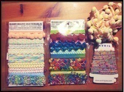

| 2012/11 16 Fri | 290回目*marika |
おはようございまりか

昨日はママとお買い物してきたよー
＼購入品／

↑毛糸とかレースとかいろいろ。
それと、パナマボーイで
コーデュロイのロンスカ2着
他にも裏原とかでかわいいお店
いっぱい見てきた

かわいい雑貨屋さんと見つけちゃった
楽しい！
というか最近緑色がすきで、
服を見ても何を見ても
緑色に私の緑センサーが反応する

緑の服が増えちゃうよーきゃー

スープカレー食べたあとに
フローズンヨーグルト食べたっ
さっぱりさわやかおいしい。
**********
 冷え性じゃないの？
冷え性じゃないの？
 冷え性だよ
冷え性だよ

手足冷たくて辛い><
公園で一番好きな遊具は？
ジャングルジム
今マンモスフリーマーケット
行くか悩んでます
いったほうがいいかな？
きっと盛り上がると思うので
来てほしいなあ...！
モード系とワイルド系
どっちの服装が好きですか⁉
モード系
ミニスカートとロングスカート
どっちが好き？
ロング！でも、乃木坂の衣装
みたいに中途半端な丈もすき♪
初めて握手した時の気持ちは
どう思ったかな？
初めてのとき、
握手しにきてくれるって言うのが
新鮮で、不思議な気持ちだった！
終わったあと、すごい反省した。
「あんな感じで良かったのかな？」
って。ぎこちなかっただろうな...
でも、あの時思った気持ちは
大切にしたいです。
実は握手会する前にみんなで
練習してたんだよー笑！
学校で憧れの先輩とかいましたか？
中学校も今も、
部活とか入ってないから
先輩と絡まないしいないです

コメントおそくなっちゃうけど
みてくれる？
読んでます^^
修学旅行で京都奈良に来てるけど、
まりかは修学旅行どこだった？
私も中学は京都奈良でした！
**********
団子潰し！
では、今日も頑張りまりっか

まりか
コメント(177)
2012/11/16 07:24